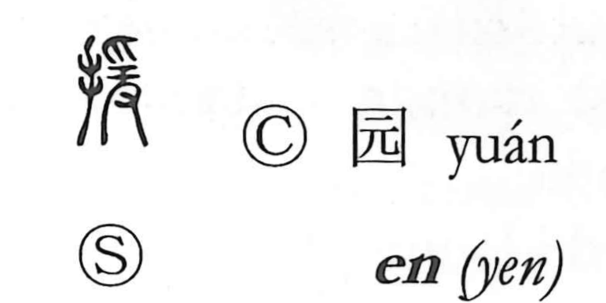

園

Uncategorized
Kun: sono | On: en
garden ・ park ・ cemetery
Explanation
園 is a phono-semantic character: the enclosing frame suggests a bounded place, while the phonetic 袁 (en) supplies both sound and imagery. In 袁, Shirakawa sees the scene of a funerary send-off—a jade ornament placed at the neck of the shrouded body, with the sign 之 by the pillow to mark the soul’s departure—an idea that also underlies 遠, “far.” With that nuance and the enclosure, 園 originally evoked the grove or shrubbery surrounding a burial ground. This is preserved in compounds such as 園塋 (cemetery), 園陵 (imperial mausoleum), and 霊園 (cemetery). The related character 苑 names gently contoured parklands, and from such settings the meaning of 園 broadened to the cultivated spaces we now call “gardens” and “parks.”